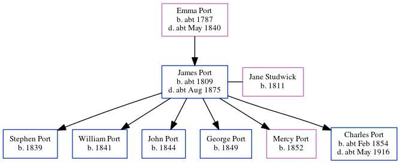

Jane Port 1811 -
[ Home ] | [ Calendar ] | [ Surnames Index ] | [ Errors ] | [ Family History ]Jane Studwick, the wife of James Port (the first cousin four-times-removed on the mother's side of Nigel Horne), was born in Herne, Kent, England in 18111,2,3 and married James (a barber with whom she had 6 children: Stephen, William, John S, George A, Mercy Ann and Charles Randle) at St Mary Northgate, Canterbury, Kent, England on 19 Feb 18334.
During her life, she was living at Herne Street in Herne on 6 Jun 18411 and on 30 Mar 18512; and at Sturry Street, Sturry, Kent on 7 Apr 18613.
Children
- Stephen was born in 1839
- William was born in 1841
- John S was born in 1844
- George A was born in 1849
- Mercy Ann was born in 1852
- Charles Randle was born c. Feb 1854
Citations
- 1841 England, Wales & Scotland Census - Findmypast (was age 30 and the wife of the head of the household)
- 1851 England, Wales & Scotland Census - Findmypast (was age 40 and the wife of the head of the household)
- 1861 England, Wales & Scotland Census - Findmypast (was age 50 and the wife of the head of the household)
- Kent Marriages And Banns - Findmypast
Family Tree
Map
Generated by ged2site. Last updated on Jul 3, 2024